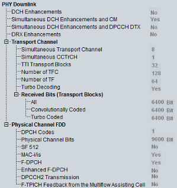

Physical Downlink UE Capabilities
The UE capability information in the PHY downlink section describes the capacity of the UE to process and store downlink channels.

PHY DL UE capabilities
- "DCH Enhancements":
Support of DCH enhancementsBasic capability involves:– Basic mode of DL FET (mode 0) – Pilot-free DL DPCH slot formats #17 and #18 – Pseudo flexible rate matching – Uplink DPCCH slot format #5 – Uplink DPDCH dynamic 10 ms transmission Full capability involves basic subfeatures plus:– Basic mode of DL FET (mode 0) – Full mode of DL FET (mode 1) – Pilot-free DL DPCH slot formats #17 and #18 – Pseudo flexible rate matching and transport channel concatenation in L1 – Uplink DPCCH slot format #5 with DL FET ACK/NACK indication – Uplink DPDCH dynamic 10 ms transmission - "Simultaneous DCH Enhancements and CM":
Support of simultaneous operation of DCH enhancements and compressed mode - "Simultaneous DCH Enhancements and DPCCH DTX":
Support of simultaneous operation of DCH enhancements and DPCCH discontinuous transmission - "DRX Enhancements":
Support of discontinuous downlink reception enhancements - Transport channel capabilities:
– "Simultaneous Transport Channel":
Maximum number of downlink transport channels that the UE is capable to process simultaneously, without checking the rate of each transport channel– "Simultaneous CCTrCH":
Maximum number of downlink coded composite transport channels (CCTrCH) that the UE is capable to process simultaneously. Note, that the CCTrCH consists of DCH, FACH or DSCH.– "TTI Transport Blocks":
Maximum total number of transport blocks received within transmission time intervals (TTIs) that end within the same 10 ms interval. This value includes all transport blocks that are to be simultaneously received by the UE on DCH, FACH, PCH and DSCH transport channels.– "Number of TFC":
Maximum number of transport format combinations (TFC) in a downlink transport format combination set that the UE can store– "Number of TF":
Maximum number of downlink transport formats (TF) that the UE can store, where all transport formats for all downlink transport channels are counted– "Turbo Decoding":
Support of turbo decoding– "Received Bits (Transport Blocks)":
Maximum number of bits of all transport blocks being received at an arbitrary time instant. This section comprises three values, corresponding to bits that are convolutionally coded, bits that are turbo-coded and the sum of all bits. - Physical channel FDD capabilities:
– "DPCH Codes":
Maximum number of DPCH codes to be simultaneously received. For DPCH in soft/softer handover, each DPCH is only calculated once. The capability does not include codes used for S-CCPCH.– "Physical Channel Bits":
Maximum number of physical channel bits received in any 10 ms interval (DPCH, PDSCH, S-CCPCH). For DPCH in soft/softer handover, each DPCH is only calculated once.– "SF 512":
Support for spreading factor (SF) 512 in downlink– "MAC-i/is":
Support of MAC-i/is entity handling E-DCH– "F-DPCH":
Support of FDD physical channel F-DPCH– "Enhanced F-DPCH":
Support of FDD physical channel enhanced F-DPCH– "DPCCH2 Transmission":
Support of DPCCH2 transmission in CELL_DCH state– "F-TPICH Feedback from the Multiflow Assisting Cell":
Support of reception of the F-TPICH feedback from the multiflow assisting serving HS-DSCH cell